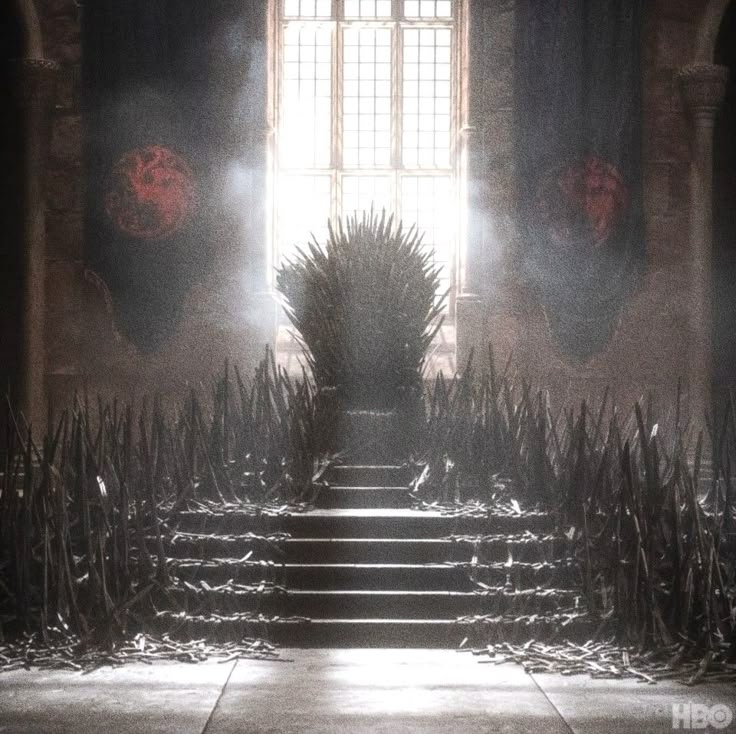

Geração 1 – O Legado de Fogo e Sangue
Após a morte de Aegon, o Conquistador, Aegon II é coroado rei e parte para conquistar Dorne.
Seu irmão, Rhaegar, lidera a campanha, mas é capturado. Após negociações, Dorne se rende e os Sete Reinos se unem.
Internamente, os casamentos de Aegon geram conflitos e tragédias.
Com a paz abalada, Rhaegar alia-se ao lorde exilado Petriatus para iniciar uma nova guerra em Mantarys,
reacendendo a promessa Targaryen: Fogo e Sangue.
